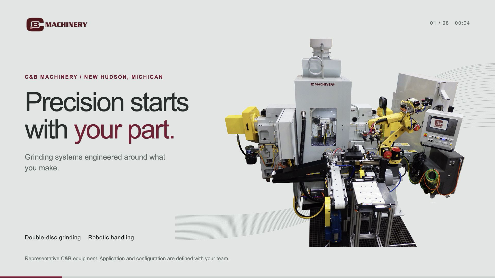
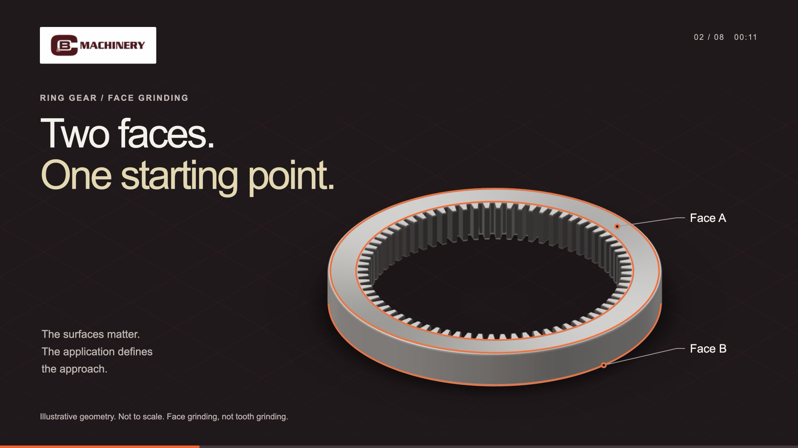
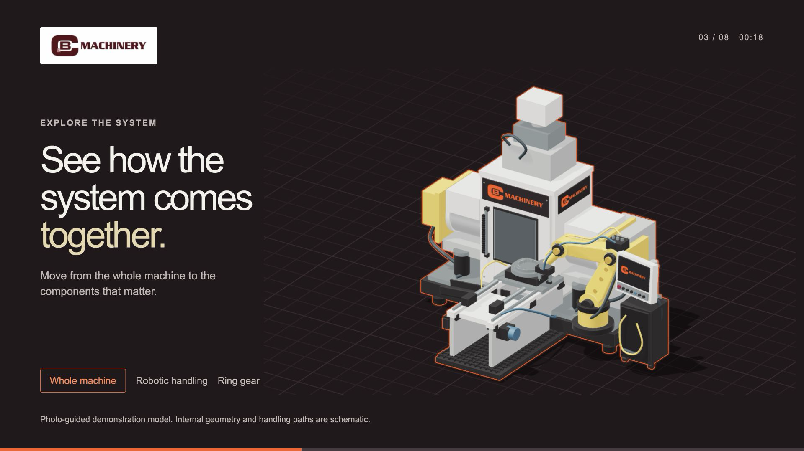
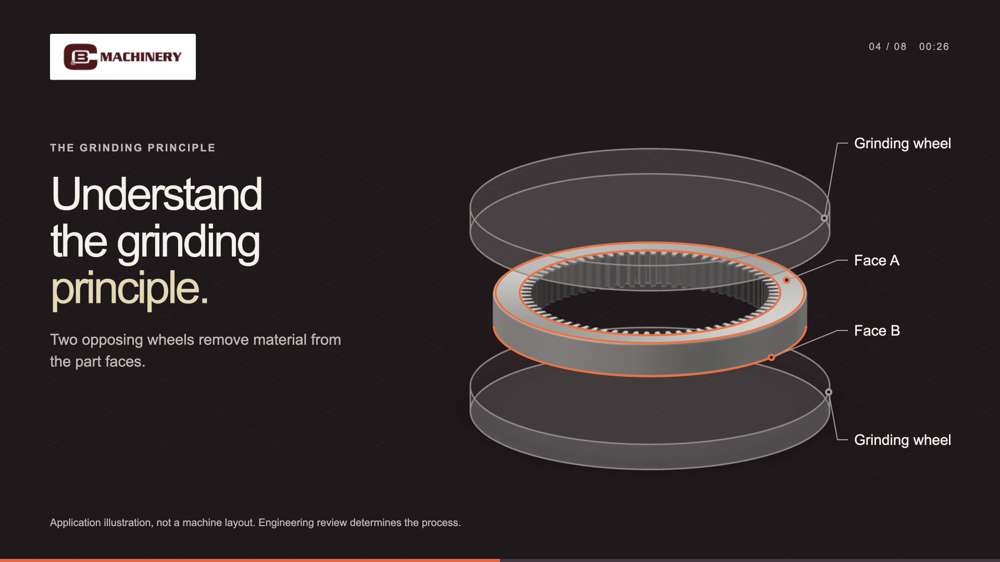
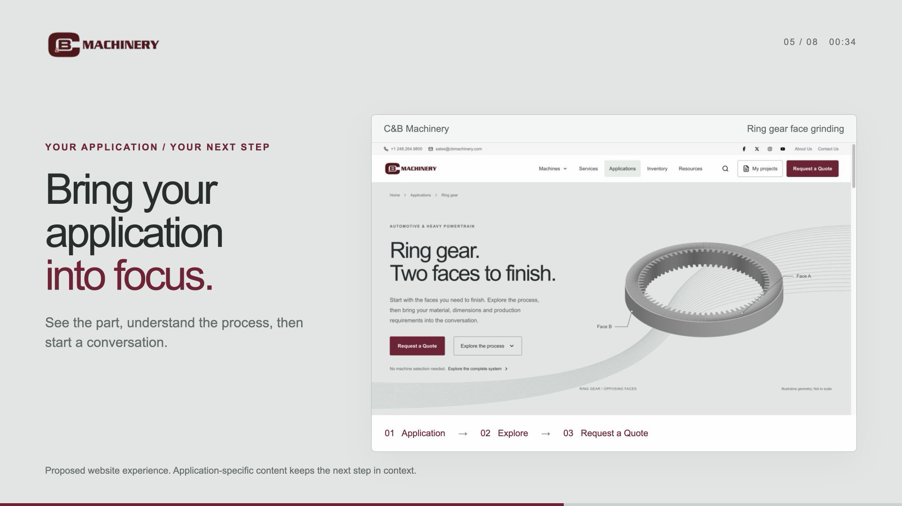
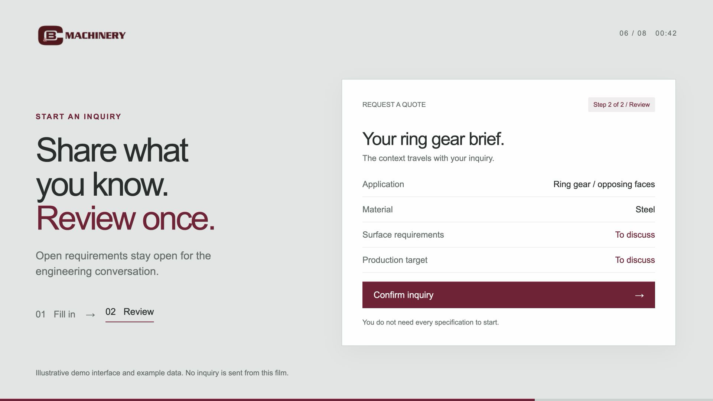
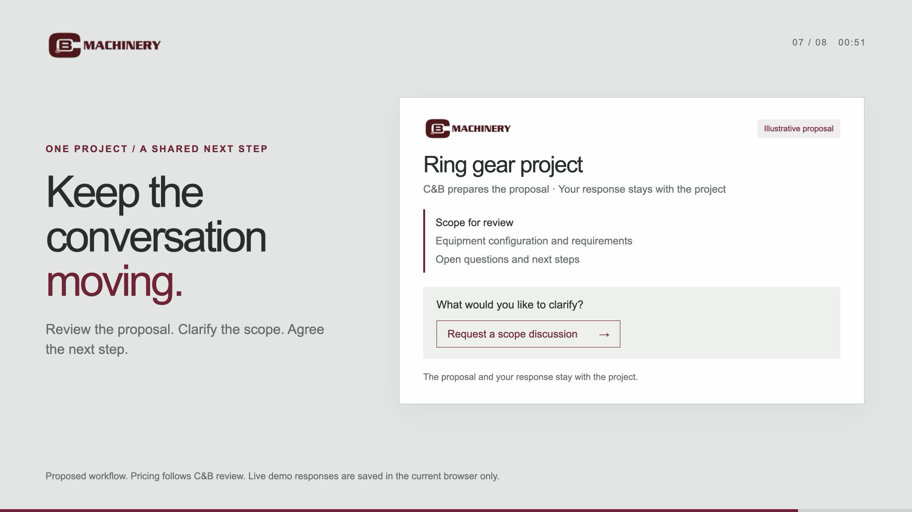
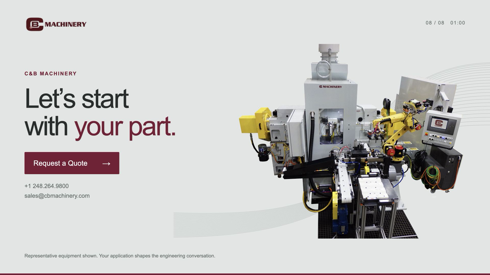

Precision starts with your part.
Open on real C&B equipment. Keep the nameplate visible; use a slow push, not an invented rotation of a photograph.
Open editable sceneFILM DIRECTION / VERSION 2
64 seconds. Eight deliberate scenes. A clearer story about C&B, your part and working together.
Script and keyframes ready for review. Final animation and voiceover are pending.

Open on real C&B equipment. Keep the nameplate visible; use a slow push, not an invented rotation of a photograph.
Open editable scene
Move close to the ring gear. Reveal the opposing faces with precise orange-red contours. Keep the teeth neutral.
Open editable scene
Show the branded model, then select robotic handling. One deliberate camera move explains the component relationship.
Open editable scene
Separate the schematic wheels, reveal the two faces and hold the relationship. No simulated production rate.
Open editable scene
Use the actual application page. Move once from the part-specific content to Request a Quote.
Open editable scene
Move from fill to review with the same information. Keep an open requirement visible and autosave quiet.
Open editable scene
Make C&B preparation explicit, then show a proposal and customer response in the same project. No instant quote or acceptance.
Open editable scene
Return to the real machine. Hold the single wine CTA and contact details for the final eight seconds.
Open editable sceneThe stills use real C&B equipment photography, the existing schematic 3D scene and simplified interface compositions. The film should use verified workflow captures for interactions. No live delivery, price or commercial acceptance is demonstrated.
Download motion and production notes